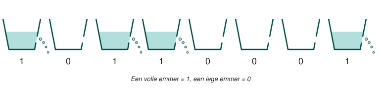

Een dynamic RAM module is een matrix van kleine cellen waarbij elke cel één transistor en een condensator bevat. De condensator kan geladen of ontladen zijn, waardoor er een nul of een één kan worden opgeslagen. In een cel wordt dus 1 bit opgeslagen.
Omdat een condensator niet in staat is om zijn waarde constant te behouden, lekken de bits weg! Je kan dit misschien vergelijken met emmers gevuld met water die bits voorstellen. In de emmers zit er een gat waardoor het water wegstroomt en de toestand van de bits verloren gaat.

Iedere bit in een dynamic RAM module moet dus om de paar milliseconden worden ververst (memory refresh) om te voorkomen dat de data weglekt. Dit zal gebeuren op het ritme van een klok.
Tijdens het verversen is de geheugencel niet beschikbaar om gelezen of beschreven te kunnen worden. Dit is uiteraard nadelig voor de snelheid. Daarbij komt ook nog dat als de cel uitgelezen wordt de toestand 0 wordt. Na het uitlezen moet de originele waarde dus worden hersteld.
Het voordeel is uiteraard dat er slechts twee componenten moeten worden gebruikt om 1 bit voor te stellen. Er kunnen dus veel meer bits op een bepaalde oppervlakte staan waardoor dynamic RAM zeer goedkoop is.